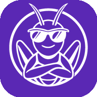

Elegí una con las flechas del control y apretá OK. Cuando termine de bajar, apretá Instalar. Pelota Libre, Flixer y Cuevana se actualizan solas.
Pelota Libre TV
Fútbol y canales deportivos
Bajar e instalarFlixer TV
Películas y series
Bajar e instalarCuevana TV
Películas y series
Bajar e instalarActualizador de Flow
Pone Flow al día en el Fire TV
Bajar e instalarAlgunos TV box traen un navegador interno de hace años. Instalá el oficial de Google y reiniciá el box. Probá primero el de Android 8 y 9: muchos TV box dicen Android 11 pero son Android 9. Si dice "error al analizar el paquete", probá el otro.
Estas no se actualizan solas: cuando salga una versión nueva, se vuelve a bajar de acá.
MXL TV
Versión 3.2.5
Bajar e instalarMXL Movies
Versión 3.1.2
Bajar e instalarXuper
8 versiones · elegí cuál
Bajar e instalar
Saltamontes
Versión 1.9.1 · elegí versión
Bajar e instalarSaltamontes Lite
Versión 2.0.0 · elegí versión
Bajar e instalarSaltamontes Downloader
Versión 1.0.0 · baja apps con códigos
Bajar e instalar